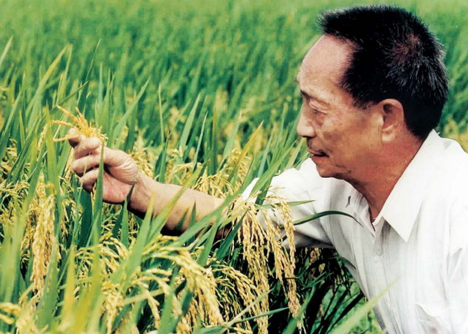

社会评价
返回寝室
袁隆平从事杂交水稻研究已经半个世纪了，不畏艰难，甘于奉献，呕心沥血，苦苦追求，为解决中国人的吃饭问题做出了重大贡献。先生的杰出成就不仅属于中国，而且影响世界。（新华网评）
袁隆平院士是中国杂交水稻事业的开创者，是当代神农。50多年来，始终在农业科研第一线辛勤耕耘、不懈探索，为人类运用科技手段战胜饥饿带来绿色的希望和金色的收获。不仅为解决中国人民的温饱和保障国家粮食安全做出了贡献，更为世界和平和社会进步树立了丰碑 。（新浪网评）
袁隆平热爱祖国、一心为民、造福人类的崇高品德，与中国共产党肝胆相照、同心同德的思想风范，与时俱进、勇攀高峰的创新精神，不畏艰险、执着追求的坚强意志，严以律己、淡泊名利的高尚情操，是当代中国人学习的楷模，更是新世纪呼唤的时代精神 。（贾庆林评）
袁隆平是一位真正的耕耘者。当他还是一个乡村教师的时候，已经具有颠覆世界权威的胆识；当他名满天下的时候，却仍然只是专注于田畴。淡泊名利，一介农夫，播撒智慧，收获富足。他毕生的梦想，就是让所有人远离饥饿。（中国科技评奖委员会评）
袁隆平致力于杂交水稻研究，发明“三系法”籼型杂交水稻，成功研究出“二系法”杂交水稻，创建了超级杂交稻技术体系，使中国杂交水稻研究始终居世界领先水平。截至2017年，杂交水稻在中国已累计推广超90亿亩，共增产稻谷6000多亿公斤。多次赴印度、越南等国，传授杂交水稻技术以帮助克服粮食短缺和饥饿问题。。袁隆平一生致力于杂交水稻技术的研究、应用与推广，发明“三系法”籼型杂交水稻，成功研究出“两系法”杂交水稻，创建了超级杂交稻技术体系，为中国粮食安全、农业科学发展和世界粮食供给作出杰出贡献。（新华网评）
袁隆平，是我国研究与发展杂交水稻的开创者，也是世界上第一个成功利用水稻杂种优势的科学家。袁老的毕生追求是“发展杂交水稻，造福世界人民”。为实现这一宏愿，他长期致力于促进杂交水稻技术创新，并将其推广至全世界。毕其一生，专注田畴，播撒智慧，收获富足。为“稻粱谋”，为民生计，袁老无愧侠之大者、国之仁士 。（人民网评）
中国的禾下土里有您的汗水，世界的稻花香里有您的笑颜。将一生奉献于“让天下人都吃饱饭”的袁隆平院士，属于中国，也属于世界。（伊朗驻华大使馆 评 ）
他一生致力于杂交水稻技术的研究、应用与推广，为我国粮食安全、农业科学发展和世界粮食供给作出杰出贡献，被誉为“杂交水稻之父” 。（新华网评）
中国著名科学家、共和国勋章获得者、中国工程院院士袁隆平逝世后，中外各界都表示沉痛悼念，这充分说明，他对中国乃至世界杂交水稻事业所作的贡献，受到广泛认可和高度评价。他的逝世是中国和世界的巨大损失，他将永远为人们所缅怀和铭记。（外交部赵立坚评）